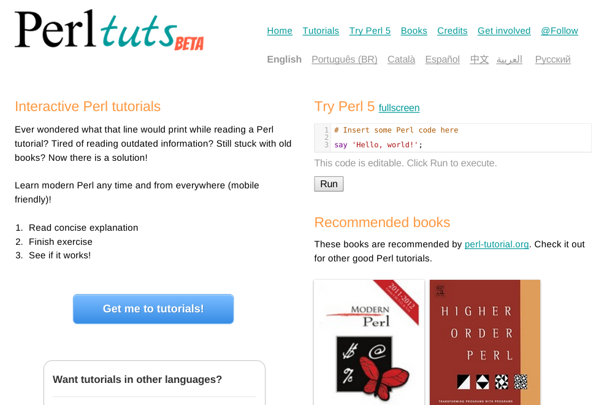
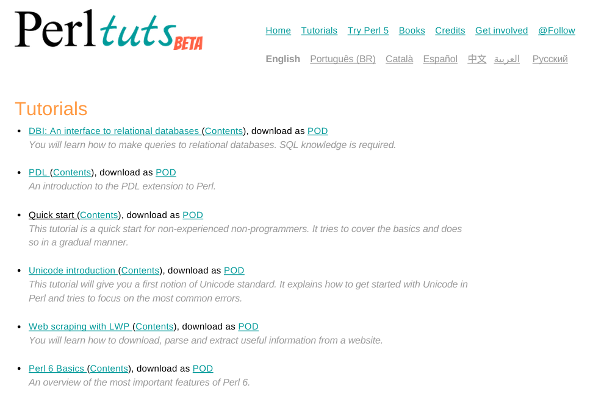
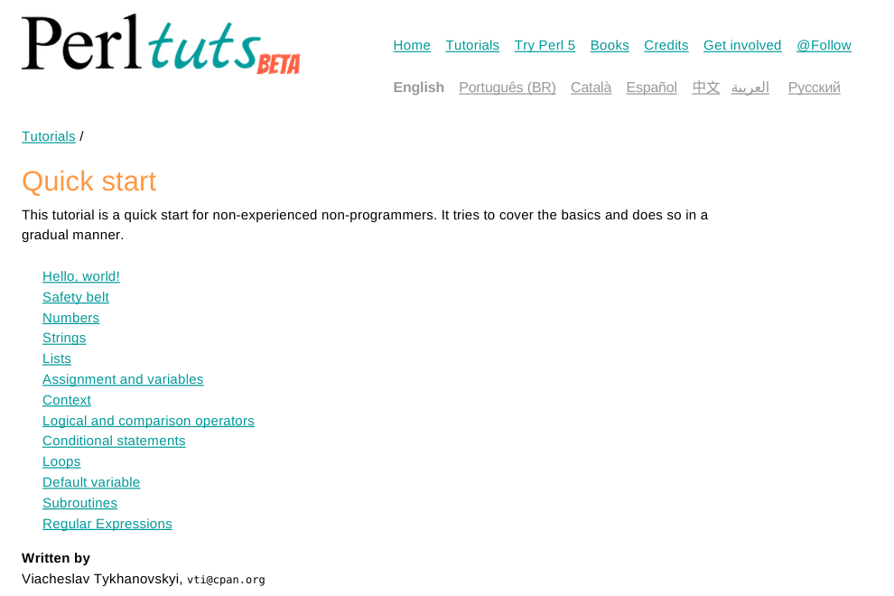
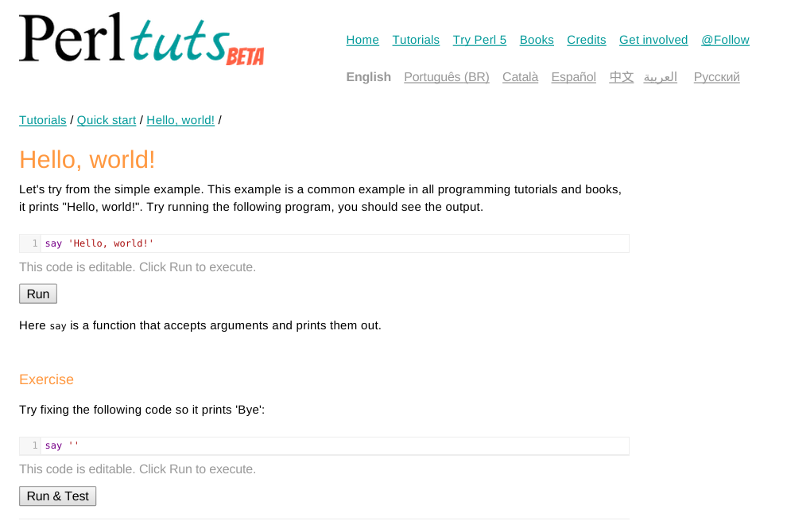
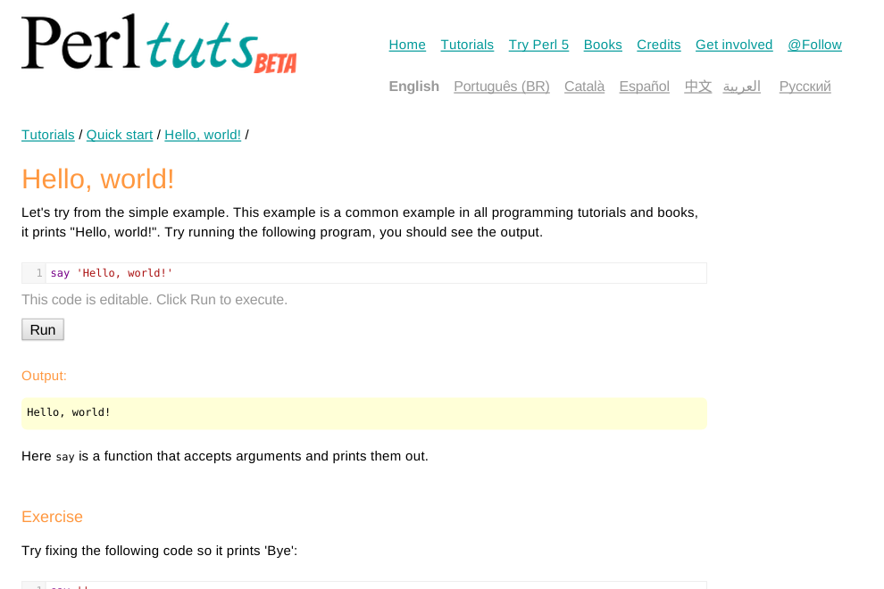
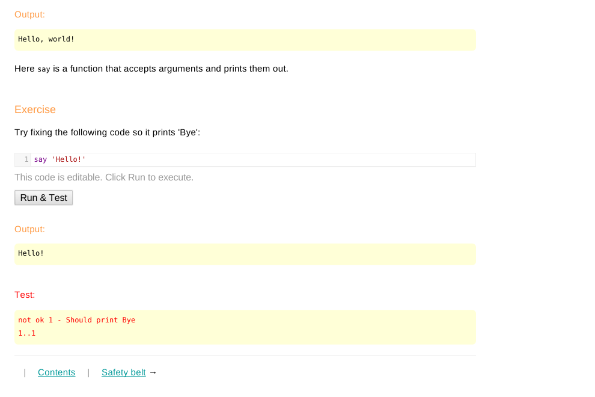
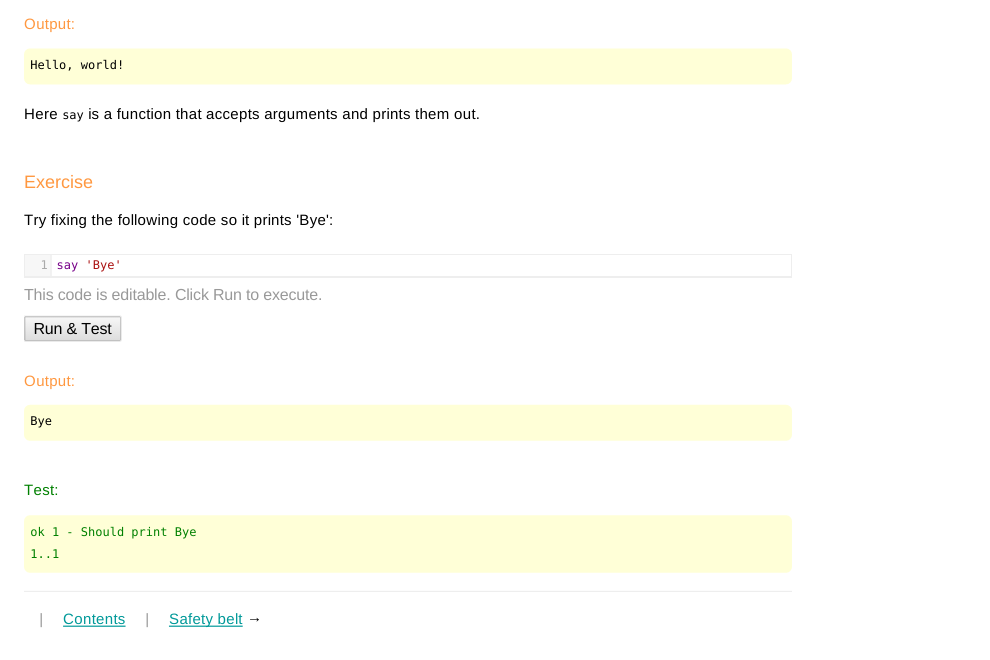
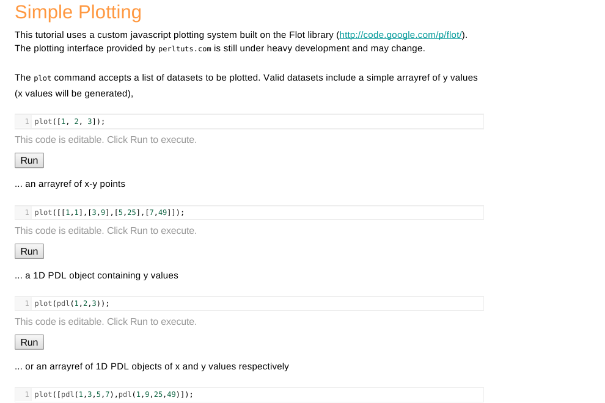
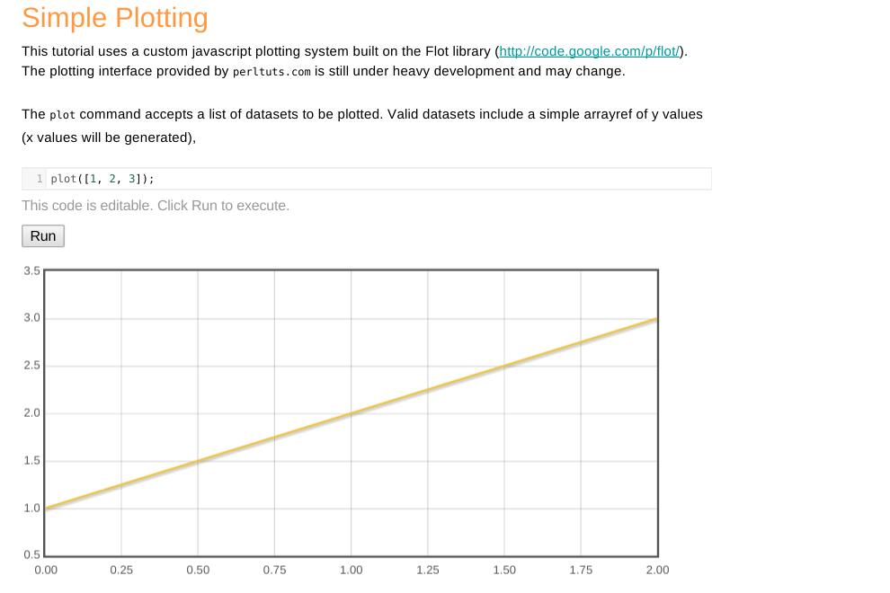

Writing tutorials for
Perltuts.com
by Alex Muntada / @alexmuntada
/me
- joined Barcelona.pm long time ago
- eventually became the leader
- organized events to help people learn Perl
- translated Perltuts quick start tutorial
- used Perltuts for one of those events
- found Perltuts was down
- helped vti resurrecting Perltuts
- used Perltuts again for next events
Perltuts

Viacheslav Tykhanovskyi (vti)
started Perltuts on 2012
Interactive Perl Tutorials
Ever wondered what that line would print while reading a Perl tutorial? Tired of reading outdated information? Still stuck with old books? Now there is a solution!

Tutorials

Contents

Ring a bell?
- name
- abstract
- description
- chapters
=pod
=head1 NAME Title of the tutorial =head1 ABSTRACT Short description in the list of tutorials. =head1 DESCRIPTION Long description in the beginning of the tutorial. =head1 TUTORIAL Tutorial content.
Quick start
(basic example)




How does it look like?
=head1 NAME Quick start =head1 ABSTRACT This tutorial is a quick start for non-experienced non-programmers. It tries to cover the basics and does so in a gradual manner. =head1 DESCRIPTION This tutorial is a quick start for non-experienced non-programmers. It tries to cover the basics and does so in a gradual manner.
=head1 TUTORIAL
=head2 Hello, world!
Let's try from the simple example. This example is a common example in all
programming tutorials and books, it prints "Hello, world!". Try running the
following program, you should see the output.
say 'Hello, world!'
Here C<say> is a function that accepts arguments and prints them out.
=head3 Exercise
Try fixing the following code so it prints 'Bye':
say ''
__TEST__
like($stdout, qr/Bye/, 'Should print Bye');
PDL
(advanced example)


How does it look like?
=head1 NAME PDL =head1 ABSTRACT An introduction to the PDL extension to Perl. =head1 DESCRIPTION This tutorial is an introduction to the Perl Data Language (PDL) which is an array-oriented mathematical module for Perl. The official PDL website is L<http://pdl.perl.org>.
=head1 INCLUDES
/js/jquery.flot.min.js
=head1 JAVASCRIPT
$('.test').after('<div class="plot hidden"></div>');
$.plot($('.plot'), []);
=head1 HANDLER
(function(data) {
var plot=$(form).children('.plot').first(); $(plot).removeClass('hidden');
if (data.result.constructor == Object && data.result.plot) {
$.plot($(plot), data.result.plot);
} else {
$(plot).addClass('hidden'); $.plot($(plot), []);
}
})(data);
=head1 MODULES
PDL
=head1 PREAMBLE
use PDL::LiteF;
use Scalar::Util 'looks_like_number';
sub plot {
my @datasets = @_;
my @output_datasets;
for my $dataset (@datasets) {
# ...
}
return +{plot => \@output_datasets};
}
=head1 TUTORIAL
=head2 Simple Plotting
This tutorial uses a custom javascript plotting system built on the Flot
library (L<http://code.google.com/p/flot/>). The plotting interface
provided by C<perltuts.com> is still under heavy development and
may change.
The C<plot> command accepts a list of datasets to be plotted.
Valid datasets include a simple arrayref of y values (x values will be
generated),
plot([1, 2, 3]);
Summary
NAME
Title of the tutorial.
ABSTRACT
Short description in the list of tutorials.
DESCRIPTION
Long description at the beginning of the tutorial.
INCLUDES
External script element to load javascript code.
JAVASCRIPT
Embedded javascript code.
HANDLER
Javascript code to handle the data produced in Perl (e.g. plot).
MODULES
Perl distributions needed to run the code.
PREAMBLE
Perl code to run before tutorial code.
TUTORIAL
The contents of the tutorial.
=head2
Chapter titles listed in the table of contents.
For everything else...
POD syntax
- text
- code blocks
- lists
- links
- text decoration
- etc.
and
__TEST__
Thanks
Questions?
Are tutorials publicly available?
How does it work?


(all logos are from Wikipedia, cc-by-sa)